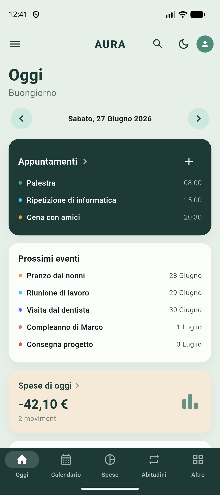
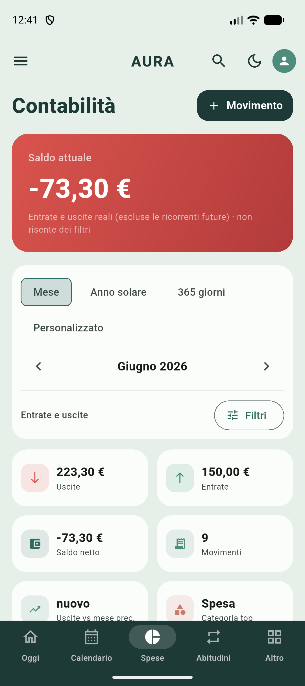
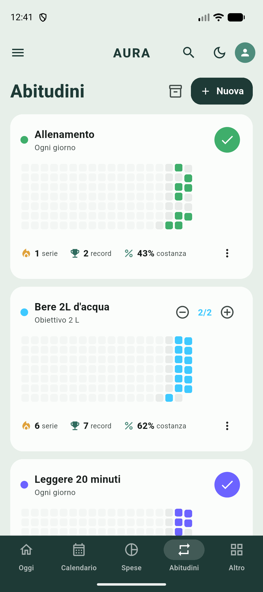

Calendario ed eventi
Vista del giorno e del mese, eventi singoli o ricorrenti, promemoria e compleanni sempre sott'occhio.
Progetto / App personale · Flutter
Un'app per tenere insieme la vita di tutti i giorni in un posto solo: calendario, abitudini, obiettivi, diario, spese e documenti. Pensata per funzionare offline, con i dati salvati e crittografati sul telefono.
AURA nasce da un'esigenza semplice: smettere di sparpagliare impegni, abitudini, spese e appunti tra dieci app diverse. È un diario digitale e un organizer personale che mette insieme le cose che conta tenere in ordine — senza account, senza cloud obbligatorio, senza pubblicità.
I dati restano sul dispositivo e vengono cifrati: AURA è pensata prima di tutto per la privacy. Puoi esportare un backup quando vuoi e ripristinarlo su un altro telefono.
Vista del giorno e del mese, eventi singoli o ricorrenti, promemoria e compleanni sempre sott'occhio.
Traccia le abitudini giorno per giorno, costruisci serie di costanza e segui i progressi verso gli obiettivi.
Annota pensieri e giornate. Un diario privato, sempre con te e protetto.
Registra entrate e uscite per categoria e leggi l'andamento con grafici chiari e immediati.
Conserva foto, file e documenti importanti, organizzati e raggiungibili dall'app.
Tieni nota delle persone e dei posti che contano, con i dettagli da ricordare per ognuno.
Database locale crittografato, blocco con password ed esportazione del backup quando vuoi.
Tema chiaro e scuro, palette di colori personalizzabili e supporto a più lingue.
AURA è scritta in Flutter, quindi gira da un'unica base di codice su Android e iOS. I dati vivono in un database SQLite locale (con drift) e vengono cifrati; i grafici delle spese sono realizzati con fl_chart.
Anteprime reali dell'app in funzione: la giornata in sintesi, la contabilità con saldo ed entrate/uscite, e le abitudini con le serie di costanza.



App in sviluppo. Quelle che vedi sono anteprime reali dell'app in esecuzione. Appena AURA sarà pubblicata troverai qui il link al download.